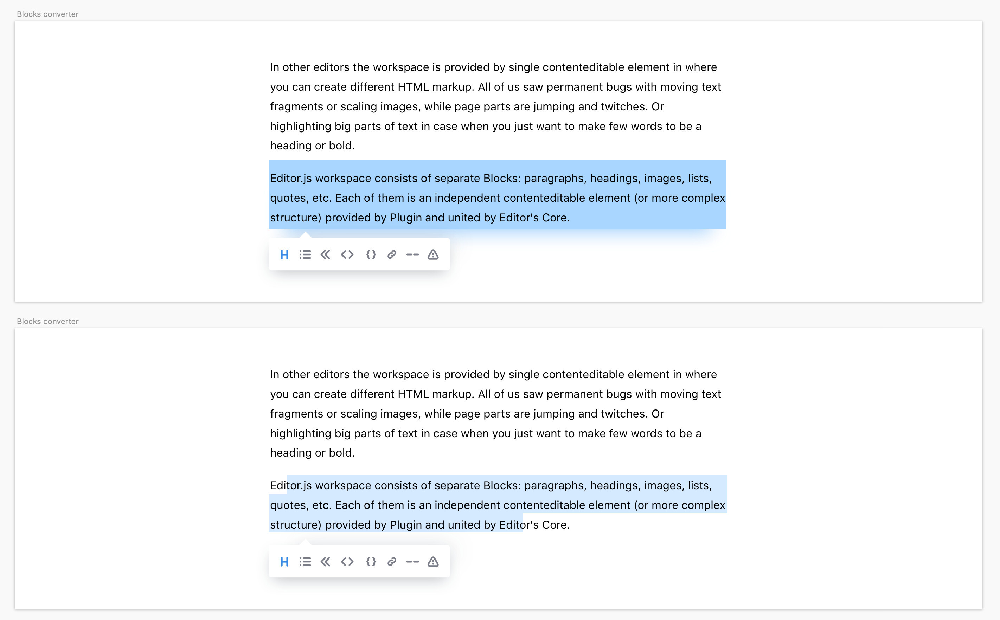

Editor.js Tools¶
Editor.js is a block-oriented editor. It means that entry composed with the list of Blocks of different types: Texts, Headers, Images, Quotes etc.
Tool — is a class that provide custom Block type. All Tools represented by Plugins.
Each Tool should have an installation guide.
Tool class structure¶
constructor()¶
Each Tool's instance called with an params object.
| Param | Type | Description |
|---|---|---|
| api | IAPI |
Editor.js's API methods |
| config | ToolConfig |
Special configuration params passed in «config» |
| data | BlockToolData |
Data to be rendered in this Tool |
| block | BlockAPI |
Block's API methods |
Example¶
constructor({data, config, api}) {
this.data = data;
this.api = api;
this.config = config;
// ...
}
render()¶
Method that returns Tool's element {HTMLElement} that will be placed into Editor.
save()¶
Process Tool's element created by render() function in DOM and return Block's data.
validate(data: BlockToolData): boolean|Promise\<boolean> optional¶
Allows to check correctness of Tool's data. If data didn't pass the validation it won't be saved. Receives Tool's data as input param and returns boolean result of validation.
merge() optional¶
Method that specifies how to merge two Blocks of the same type, for example on Backspace keypress.
Method does accept data object in same format as the Render and it should provide logic how to combine new
data with the currently stored value.
Internal Tool Settings¶
Options that Tool can specify. All settings should be passed as static properties of Tool's class.
| Name | Type | Default Value | Description |
|---|---|---|---|
toolbox |
Object | undefined |
Pass the icon and the title there to display this Tool in the Editor's Toolbox icon - HTML string with icon for the Toolbox title - title to be displayed at the Toolbox. May contain an array of {icon, title, data} to display the several variants of the tool, for example "Ordered list", "Unordered list". See details at the documentation |
enableLineBreaks |
Boolean | false |
With this option, Editor.js won't handle Enter keydowns. Can be helpful for Tools like <code> where line breaks should be handled by default behaviour. |
isInline |
Boolean | false |
Describes Tool as a Tool for the Inline Toolbar |
isTune |
Boolean | false |
Describes Tool as a Block Tune |
sanitize |
Object | undefined |
Config for automatic sanitizing of saved data. See Sanitize section. |
conversionConfig |
Object | undefined |
Config allows Tool to specify how it can be converted into/from another Tool. See Conversion config section. |
User configuration¶
All Tools can be configured by users. You can set up some of available settings along with Tool's class
to the tools property of Editor Config.
var editor = new EditorJS({
holder : 'editorjs',
tools: {
text: {
class: Text,
inlineToolbar : true,
// other settings..
},
header: Header
},
defaultBlock : 'text',
});
There are few options available by Editor.js.
| Name | Type | Default Value | Description |
|---|---|---|---|
inlineToolbar |
Boolean/Array | false |
Pass true to enable the Inline Toolbar with all Tools, or pass an array with specified Tools list |
config |
Object | null |
User's configuration for Plugin. |
Tool prepare and reset¶
If you need to prepare some data for Tool (eg. load external script, create HTML nodes in the document, etc) you can use static prepare method.
It accepts tools config passed on Editor's initialization as an argument:
class Tool {
static prepare(config) {
loadScript();
insertNodes();
...
}
}
On Editor destroy you can use an opposite method reset to clean up all prepared data:
class Tool {
static reset() {
cleanUpScripts();
deleteNodes();
...
}
}
Both methods might be async.
Paste handling¶
Editor.js handles paste on Blocks and provides API for Tools to process the pasted data.
When user pastes content into Editor, pasted content will be splitted into blocks.
- If plain text will be pasted, it will be splitted by new line characters
- If HTML string will be pasted, it will be splitted by block tags
Also Editor API allows you to define your own pasting scenario. You can either:
- Specify HTML tags, that can be represented by your Tool. For example, Image Tool can handle
<img>tags. If tags you specified will be found on content pasting, your Tool will be rendered. - Specify RegExp for pasted strings. If pattern has been matched, your Tool will be rendered.
- Specify MIME type or extensions of files that can be handled by your Tool on pasting by drag-n-drop or from clipboard.
For each scenario, you should do 2 next things:
- Define static getter
pasteConfigin Tool class. Specify handled patterns there. - Define public method
onPastethat will handle PasteEvent to process pasted data.
HTML tags handling¶
To handle pasted HTML elements object returned from pasteConfig getter should contain following field:
| Name | Type | Description |
|---|---|---|
tags |
String[] |
Optional. Should contain all tag names you want to be extracted from pasted data and processed by your onPaste method |
For correct work you MUST provide onPaste handler at least for defaultBlock Tool.
Example¶
Header Tool can handle H1-H6 tags using paste handling API
static get pasteConfig() {
return {
tags: ['H1', 'H2', 'H3', 'H4', 'H5', 'H6'],
}
}
Note. Same tag can be handled by one (first specified) Tool only.
Note. All attributes of pasted tag will be removed. To leave some attribute, you should explicitly specify them. Se below
Let's suppose you want to leave the 'src' attribute when handle pasting of the img tags. Your config should look like this:
static get pasteConfig() {
return {
tags: [
{
img: {
src: true
}
}
],
}
}
Read more about the sanitizing configuration.
RegExp patterns handling¶
Your Tool can analyze text by RegExp patterns to substitute pasted string with data you want. Object returned from pasteConfig getter should contain following field to use patterns:
| Name | Type | Description |
|---|---|---|
patterns |
Object |
Optional. patterns object contains RegExp patterns with their names as object's keys |
Note Editor will check pattern's full match, so don't forget to handle all available chars in there.
Pattern will be processed only if paste was on defaultBlock Tool and pasted string length is less than 450 characters.
Example
You can handle YouTube links and insert embeded video instead:
static get pasteConfig() {
return {
patterns: {
youtube: /http(?:s?):\/\/(?:www\.)?youtu(?:be\.com\/watch\?v=|\.be\/)([\w\-\_]*)(&(amp;)?[\w\?=]*)?/
},
}
}
Files pasting¶
Your Tool can handle files pasted or dropped into the Editor.
To handle file you should provide files property in your pasteConfig configuration object.
files property is an object with the following fields:
| Name | Type | Description |
|---|---|---|
extensions |
string[] |
Optional Array of extensions your Tool can handle |
mimeTypes |
sring[] |
Optional Array of MIME types your Tool can handle |
Example
static get pasteConfig() {
return {
files: {
mimeTypes: ['image/png'],
extensions: ['json']
}
}
}
Pasted data handling¶
If you registered some paste substitutions in pasteConfig property, you should provide onPaste callback in your Tool class.
onPaste should be public non-static method. It accepts custom PasteEvent object as argument.
PasteEvent is an alias for three types of events - tag, pattern and file. You can get the type from PasteEvent object's type property.
Each of these events provide detail property with info about pasted content.
| Type | Detail |
|---|---|
tag |
data - pasted HTML element |
pattern |
key - matched pattern key you specified in pasteConfig object data - pasted string |
file |
file - pasted file |
Example
onPaste (event) {
switch (event.type) {
case 'tag':
const element = event.detail.data;
this.handleHTMLPaste(element);
break;
case 'pattern':
const text = event.detail.data;
const key = event.detail.key;
this.handlePatternPaste(key, text);
break;
case 'file':
const file = event.detail.file;
this.handleFilePaste(file);
break;
}
}
Disable paste handling¶
If you need to disable paste handling on your Tool for some reason, you can provide false as pasteConfig value.
That way paste event won't be processed if fired on your Tool:
static get pasteConfig {
return false;
}
Sanitize ¶
Editor.js provides API to clean taint strings.
Use it manually at the save() method or or pass sanitizer config to do it automatically.
Sanitizer Configuration¶
The example of sanitizer configuration
let sanitizerConfig = {
b: true, // leave <b>
p: true, // leave <p>
}
Keys of config object is tags and the values is a rules.
Rule¶
Rule can be boolean, object or function. Object is a dictionary of rules for tag's attributes.
You can set true, to allow tag with all attributes or false|{} to remove all attributes,
but leave tag.
Also you can pass special attributes that you want to leave.
a: {
href: true
}
If you want to use a custom handler, use should specify a function that returns a rule.
b: function(el) {
return !el.textContent.includes('bad text');
}
or
a: function(el) {
let anchorHref = el.getAttribute('href');
if (anchorHref && anchorHref.substring(0, 4) === 'http') {
return {
href: true,
target: '_blank'
}
} else {
return {
href: true
}
}
}
Manual sanitize¶
Call API method sanitizer.clean() at the save method for each field in returned data.
save() {
return {
text: this.api.sanitizer.clean(taintString, sanitizerConfig)
}
}
Automatic sanitize¶
If you pass the sanitizer config as static getter, Editor.js will automatically sanitize your saved data.
Note that if your Tool is allowed to use the Inline Toolbar, we will get sanitizing rules for each Inline Tool and merge with your passed config.
You can define rules for each field
static get sanitize() {
return {
text: {},
items: {
b: true, // leave <b>
a: false, // remove <a>
}
}
}
Don't forget to set the rule for each embedded subitems otherwise they will not be sanitized.
if you want to sanitize everything and get data without any tags, use {} or just
ignore field in case if you want to get pure HTML
static get sanitize() {
return {
text: {},
items: {}, // this rules will be used for all properties of this object
// or
items: {
// other objects here won't be sanitized
subitems: {
// leave <a> and <b> in subitems
a: true,
b: true,
}
}
}
}
Conversion config ¶
Editor.js has a Conversion Toolbar that allows user to convert one Block to another.

- You can add ability to your Tool to be converted. Specify «export» property of
conversionConfig. - You can add ability to convert other Tools to your Tool. Specify «import» property of
conversionConfig.
Conversion Toolbar will be shown only near Blocks that specified an «export» rule, when user selected almost all block's content. This Toolbar will contain only Tools that specified an «import» rule.
Example:
class Header {
constructor(){
this.data = {
text: '',
level: 2
}
}
/**
* Rules specified how our Tool can be converted to/from other Tool.
*/
static get conversionConfig() {
return {
export: 'text', // this property of tool data will be used as string to pass to other tool
import: 'text' // to this property imported string will be passed
};
}
}
Your Tool -> other Tool¶
The «export» field specifies how to represent your Tool's data as a string to pass it to other tool.
It can be a String or a Function.
String means a key of your Tool data object that should be used as string to export.
Function is a method that accepts your Tool data and compose a string to export from it. See example below:
class ListTool {
constructor(){
this.data = {
items: [
'Fisrt item',
'Second item',
'Third item'
],
type: 'ordered'
}
}
static get conversionConfig() {
return {
export: (data) => {
return data.items.join('.'); // in this example, all list items will be concatenated to an export string
},
// ... import rule
};
}
}
Other Tool -> your Tool¶
The «import» rule specifies how to create your Tool's data object from the string created by original block.
It can be a String or a Function.
String means the key in tool data that will be filled by an exported string.
For example, import: 'text' means that constructor of your block will accept a data object with text property filled with string composed by original block.
Function allows you to specify own logic, how a string should be converted to your tool data. For example:
class ListTool {
constructor(data){
this.data = data || {
items: [],
type: 'unordered'
}
}
static get conversionConfig() {
return {
// ... export rule
/**
* In this example, List Tool creates items by splitting original text by a dot symbol.
*/
import: (string) => {
const items = string.split('.');
return {
items: items.filter( (text) => text.trim() !== ''),
type: 'unordered'
};
}
};
}
}
Block Lifecycle hooks¶
rendered()¶
Called after Block contents is added to the page
updated()¶
Called each time Block contents is updated
removed()¶
Called after Block contents is removed from the page but before Block instance deleted
moved(MoveEvent)¶
Called after Block was moved. MoveEvent contains fromIndex and toIndex
respectively.